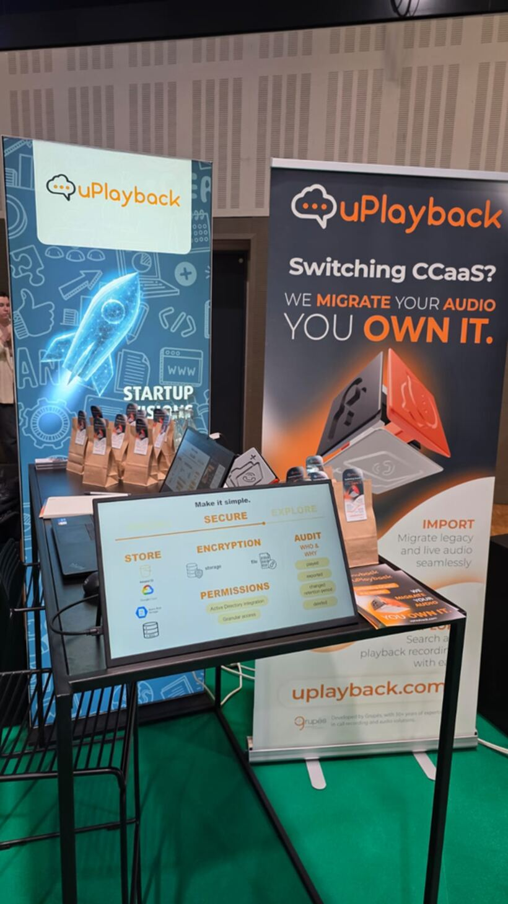

Agência · Conteúdo
Produção de conteúdo na In‑Pacto
Responsável por todo o conteúdo da agência e dos seus clientes durante o período em que lá trabalhei. Vários clientes ao mesmo tempo, cada um com o seu tom, e prazos que não esperam.
Lisboa · Trabalho remoto · Disponível já
Produção de conteúdo, marketing, assistência pessoal.
Sempre trabalhei em diversas áreas, mas sempre em contexto informal, ainda que rigoroso: criação de conteúdo para uma agência de comunicação e os seus clientes, organização de agenda e viagens corporativas de uma empresa familiar, criação de branding para uma conferência internacional. Estou pronta para o próximo desafio.

Oito afirmações. Cada uma tem uma história por trás, não é um adjetivo solto num currículo. Clique num cartão para ver porquê.
Aos 10 anos aprendi Braille por iniciativa própria e traduzi livros para a minha escola inclusiva. Ninguém me pediu. Mexi o que era preciso mexer até estar feito.
Aos 15 anos fiz um pitch no ISEG que ainda hoje é lembrado, com elogios do Rotary, da Microsoft e da ONU. Falar em palco, para desconhecidos, nunca foi o meu problema.
Uso IA a um nível pouco comum para a minha idade. Trabalho que levaria semanas sai em horas, sem que a qualidade caia. Este site é um exemplo do que consigo produzir sozinha.
Dou explicações a crianças neurodivergentes e funciona. Isso exige ler a pessoa à frente, mudar de método a meio e nunca perder a calma. Serve para alunos e serve para clientes.
Programo o suficiente para resolver os meus próprios problemas e desenrasco-me bem em IT. Quando algo trava, procuro a solução em vez de esperar que alguém a traga.
Trato da agenda de quem trabalho comigo e marco viagens corporativas. Encontrar o melhor preço, encaixar voos em reuniões e prever o que corre mal é rotina, não teoria.
Pago do meu bolso as licenças Adobe e Claude Max com que trabalho. Acredito no retorno porque já o vi: as explicações que dou nasceram do mesmo raciocínio e resultaram.
Programação, design, um canal de YouTube, televisão, explicações e conteúdo digital. Entro em áreas novas sem medo e trago de cada uma alguma coisa que fica.
Cresci a saltar entre áreas. Nenhuma foi tempo perdido: cada uma deixou uma ferramenta que uso na seguinte.
Agência · Conteúdo
Responsável por todo o conteúdo da agência e dos seus clientes durante o período em que lá trabalhei. Vários clientes ao mesmo tempo, cada um com o seu tom, e prazos que não esperam.
Branding · Evento internacional
Identidade e todos os materiais de stand: roll‑ups, apresentação de produto, merchandising e sinalética, com uma linguagem coerente do primeiro cartaz ao último detalhe.

Empreendedorismo
Da ideia ao pitch: constituição da equipa, definição do produto, marca, plano de comunicação e vendas reais. Terminou com a apresentação final em palco no ISEG, Lisbon School of Economics & Management.

Ensino
Acompanhamento individual a Português, Matemática e Inglês, com planos de aula e fichas feitos à medida de cada aluno. O que aprendi a explicar a quem processa o mundo de outra maneira aplica-se a qualquer público.
Faculdade de Ciências Humanas, Universidade Católica Portuguesa, Lisboa
A terminar · 3.º ano
20
A nota mais alta do curso, na cadeira que sustenta o trabalho que quero fazer: posicionamento, campanha e a ponte entre aquilo que uma marca é e aquilo que comunica.
18
Saber como os meios se transformaram é o que permite escolher hoje o canal certo, e reconhecer o que já foi tentado antes de o propor como novo.
18
A língua de trabalho dos projetos internacionais, como o branding que desenvolvi para a presença da uPlayback num summit fora de Portugal.
Procuro trabalho remoto para poder usar as minhas ferramentas nos ambientes onde rendo mais. Deslocações pontuais ou regulares mas reduzidas não são problema: gravar conteúdo, reuniões, pitches ou trabalho presencial quando a ocasião o justifica.
Com o curso a terminar tenho menos cadeiras e menos carga horária, portanto mais tempo real. Quero juntar dinheiro para o mestrado e começar já a construir carreira, o que significa que venho para ficar e para crescer.
Sempre trabalhei em contexto informal, por isso este seria o meu primeiro emprego. Para o empregador, isso abre a porta aos benefícios de IRC previstos para a criação de primeiro emprego.
Cinco perguntas sobre a vaga, não sobre mim. No fim tem uma resposta honesta, incluindo as partes em que talvez não seja a pessoa certa.
O quiz precisa de JavaScript para calcular o resultado. Sem ele, fica o essencial: procuro remoto com deslocações reduzidas, quero conteúdo e marketing no centro da função, trabalho melhor com autonomia, uso IA todos os dias e este seria o meu primeiro vínculo formal. Se isso encaixa, falemos.
Se acha que faz sentido, o passo seguinte é uma conversa.